Konzept-Board · Designstudie von Tasty Studios · Stand 9. Oktober 2026 · nur lokal
Zehn Ideen für die neue Website. Alles unten kommt aus dem Material des Hauses: 45 Seiten, 64 PDFs, 779 Fotos, die Filme des eigenen Kanals.
01Das Haus, wie es sich zeigt
Das Schiff legt vor dem Haus an, das Postauto hält vor der Tür, Interlaken ist fünf Minuten entfernt. Vierzig Zimmer, die meisten mit Balkon und Morgensonne über dem Brienzersee. Ein Seerestaurant mit weissem Tischtuch, eine Pizzeria mit Holzdecke und Ofen, ein Saal für hundert Gäste. Seit 1873 am selben Platz, seit 1955 in der Hand einer Familie.
Was Gäste loben, steht in den Noten: Lage 9,7 und Personal 9,5 auf Booking, Platz 1 von 5 in Bönigen auf TripAdvisor, 4,7 bei Google. Beides gehört nach vorn: der See in jedem zweiten Bild, die Menschen des Hauses in den Sätzen.
Der Satz des Hauses, der alles trägt: «Hier sind Sie zuhause.» Er steht heute auf der Startseite und wird der Satz im Fuss.
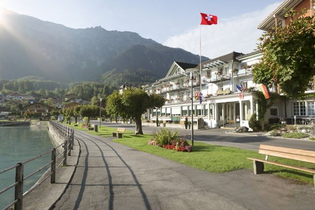
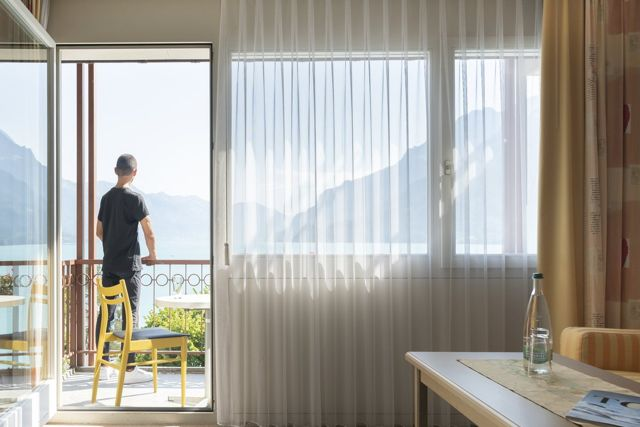
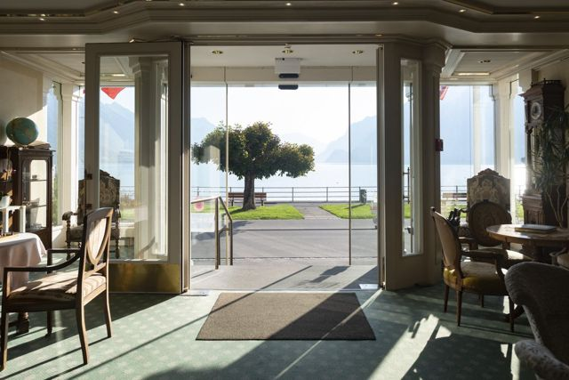
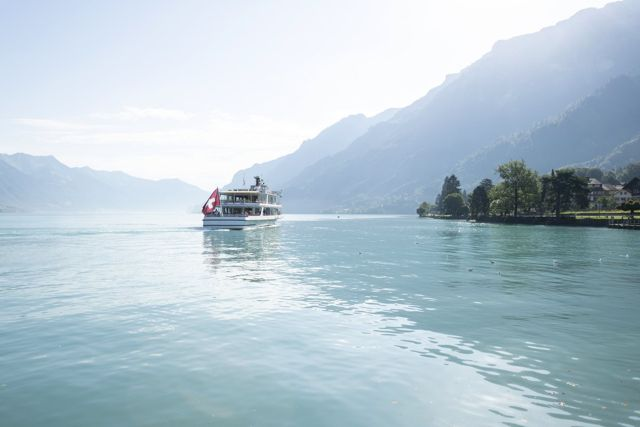
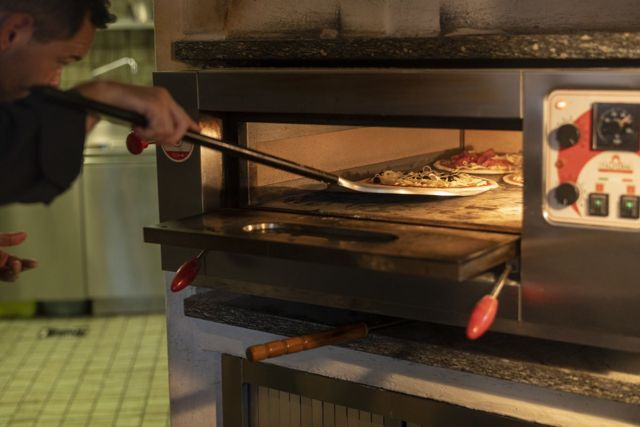
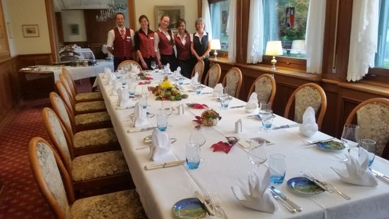
02Zwei Farbwelten zur Wahl
Beide Welten sind aus denselben Quellen gemessen: aus der Wortmarke von 2025, aus den Speisekarten und vor allem aus den Fotos des Ortes. Die heutige Seite benutzt ein Sandbeige und drei blasse Baukastentöne (Lila, Rosé, Mint); vom Haus stammt davon nur das Sandbeige.
Hell und luftig. Die Farbe der Wortmarke als Hausfarbe, der See als zweite Fläche, Weiss wie die Fassade mit den Balkonen. Dunkle Flächen nur für den Abend auf der Terrasse und die Pizzeria. Ein Farbpunkt: das Rot des «Salon Rouge».
Meine Empfehlung. Das Haus beschreibt sich über den See und das Licht am Morgen; die Wortmarke ist bereits in dieser Farbe. Dieses Board ist in A gesetzt, damit Du die Wirkung siehst.
Wärmer und dunkler. Das Holz der Pizzeria, das Gold des Sonnenuntergangs, Creme statt Weiss. Der See bleibt als Bild, das Petrol der Wortmarke wird zur Linie und zum Zeichen, die Nacht am See ist die dunkle Fläche.
Näher am Carlton (dunkel, warm). Passt zur Pizzeria und zum Abend, weniger zum Satz «Morgensonne über dem See», den das Haus in jeder Zimmerbeschreibung wiederholt.
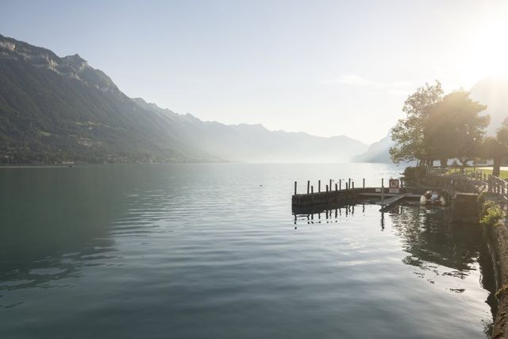
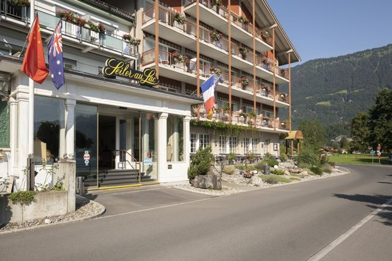
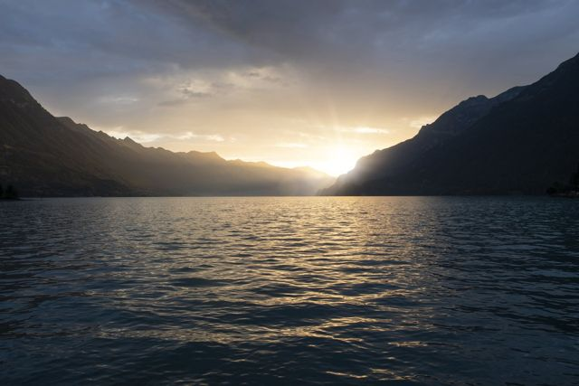
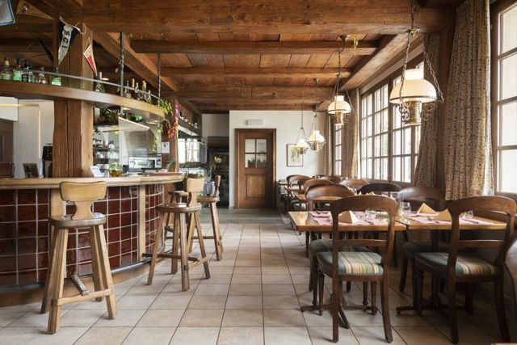
03Schrift und Zeichen des Hauses
Die Wortmarke von 2025 besteht aus einer Schreibschrift («Seiler au Lac») und römischen Versalien (HOTEL · BÖNIGEN / INTERLAKEN). Die Schreibschrift bleibt der Marke vorbehalten und wird nie als Text gesetzt. Die Titelschrift kommt von den Versalien: Marcellus hat denselben inschriftlichen Schnitt und echte Kleinbuchstaben, also normale Schreibung in Titeln wie beim Carlton. Für Kapitelzeilen und Namensschilder in Versalien steht Cinzel bereit, das sind fast dieselben Buchstaben wie in der Marke.
Lesetext Instrument Sans, eine Stufe grösser als beim Carlton (18 px), weil die Gäste dieses Hauses oft älter sind. Kleine Marken und Knöpfe in DM Mono. Ersatzschriften in gleicher Laufweite, damit beim Laden nichts springt.
Wortmarke 2025, als Vektor nachgezeichnet
Gültig ist die Fassung von 2025 (farbig, weiss, schwarz, gelb in der Mediathek). Die alte blaue Fassung mit vier Sternen lebt nur noch im Gutschein-Bild und wird nicht verwendet.
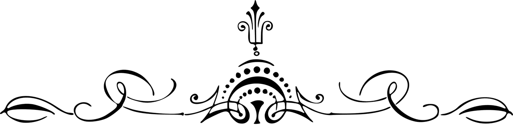
Muster Ton in Ton (statt der Tapete beim Carlton): eine feine Wellenlinie, wie die Trennlinie dieser Seite. Nur auf den dunklen Flächen, nie über Bewegtem.
04Der erste Moment
Das Haus beschreibt diesen Moment selbst: «Stellen Sie sich vor, wie Sie die Türe zu Ihrem Zimmer öffnen und gleich auf den grosszügigen Balkon hinaustreten.» Genau das ist der Auftakt. Kein Türflügel wie beim Carlton, sondern ein Vorhang: Zwei helle Stoffbahnen ziehen sich vom Bildschirm nach links und rechts (nur transform), dahinter steht der See am Morgen, scharf und in voller Breite. Der Titel fährt zeilenweise hoch, die Buchungsleiste schwebt von unten herauf.
Zweite Möglichkeit
Der Film des Hauses («Arrival moments», 60 s, eigener Kanal) beginnt mit der Drohne über dem See und endet an der Eingangstür. Als Auftakt wäre das ein laufendes Video hinter dem ersten Bildschirm, und das verbietet Regel 55. Deshalb nicht hier, sondern weiter unten als kurzer Film in einem stehenden Fenster (Idee 10).
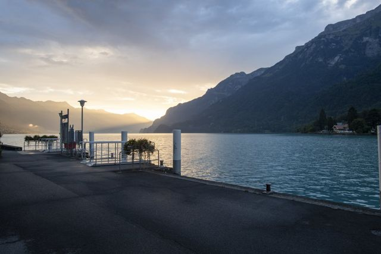
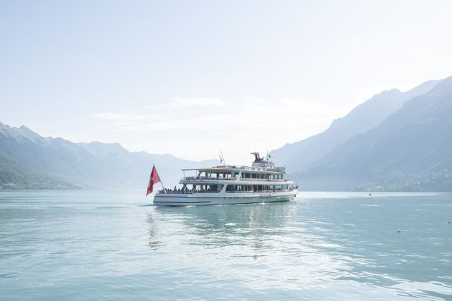
05Fragen an den Gast
Das Haus beschreibt seine Zimmer genau so: Seeseite mit Morgensonne und Sonnenaufgang, Bergseite mit Abendsonne und Sonnenuntergang. Daraus werden drei ehrliche Fragen mit grossen, klaren Knöpfen. Kein Schieberegler, keine Wortreihe zum Schieben. Jede Antwort führt an die richtige Stelle, und die Zimmer-Seite nimmt die Wahl mit.
Seeseite: Sonnenaufgang über dem Brienzersee, Balkon. Bergseite: Sonnenuntergang vor der Bergkulisse. Antwort mit den zwei passenden Fotos und dem Satz des Hauses.
Allein: Einzelzimmer Berg oder See. Zu zweit: Classic, Comfort, Superior, Junior Suite. Bis fünf: Familienzimmer mit Verbindungstür und abschliessbarem Eingang.
Seerestaurant mit täglich wechselndem Hauptgang und Terrasse am See, oder Pizzeria mit Holzdecke, Ofen, Bar und Take-away. Beide mit ihren Zeiten.
06Der Erzählfaden der Startseite
Zwölf Stationen, jede in sich geschlossen, jede höchstens drei bis vier Scroll-Bewegungen lang, ein bewegtes Element pro Blick. Hell und dunkel im Wechsel, die dunklen Flächen sparsam. Was nicht im Bild ist, rechnet nicht.
See am Morgen in voller Breite, Titel «Hier sind Sie zuhause.», Buchungsleiste mit Datum und Gästen schwebt herauf (übergibt an simplebooking 10421). Darunter eine Zeile: Rezeption, Telefon, Postauto gratis.
Vorhang · Zeilen-Maske · Leiste von unten · 1 Scroll
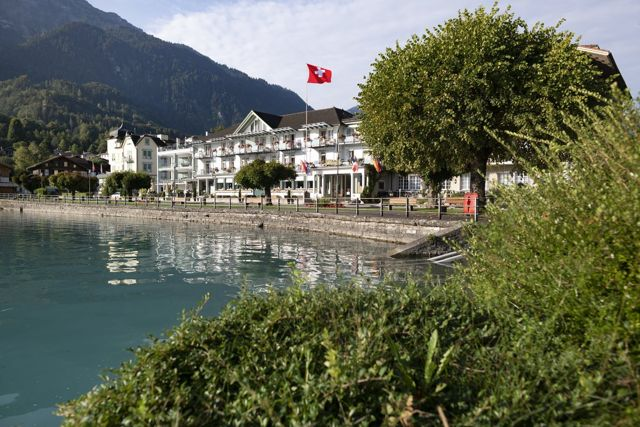
Ein grosser Satz, daneben das Haus vom Wasser aus und zwei kleinere Bilder (Halle mit Blick auf den Quai, Terrasse mit Gästen). Die Noten als drei Angaben auf einer Linie: Lage 9,7 · Personal 9,5 · Nr. 1 in Bönigen, je mit Portal und Datum.
Bilder schweben nacheinander · 2 Scrolls
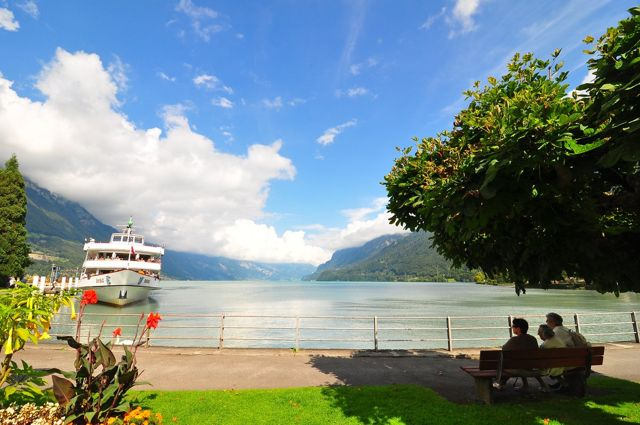
Die erste Frage, zwei grosse Bildkarten mit Namensschild in der Kerbe. Die Antwort erscheint darunter, mit Grössen und Belegung aus der Zimmer-Seite und dem Knopf «Zimmer ansehen».
Karten heben sich, Text über Deckkraft · 2 Scrolls
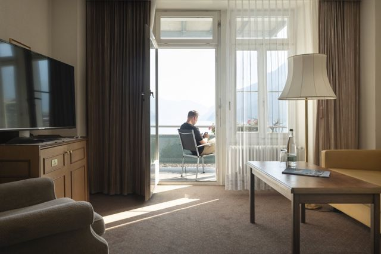
Classic, Superior, Junior Suite als drei Bilder ohne Rahmen, Name gross darunter, der Satz des Hauses klein. Knöpfe: «Alle 40 Zimmer», «Welches Zimmer passt zu mir?».
Hochschweben nacheinander · 2 Scrolls
Ein stehendes Bild, die Seite zieht darüber. Das Kursschiff auf dem grünblauen See, der Satz fest in der Mitte, erst sichtbar, wenn der Ausschnitt ihn freigibt. Dunkel ins Bild gerechnet.
clip-path, kein Skript · 1 Scroll
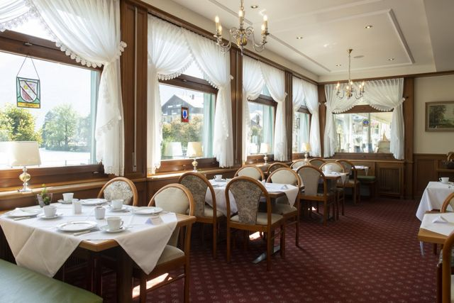
Links hell: «La Gare», weisses Tischtuch, See hinter den Fenstern, Zeiten. Rechts auf Holz-dunkler Fläche: «La Bohème», Ofen und Bar, Zeiten Sommer/Winter als Schalter. Dazwischen die Naht mit Lauftext: die Gerichte beider Karten.
Zwei Flächen, Lauftext nur transform · 3 Scrolls
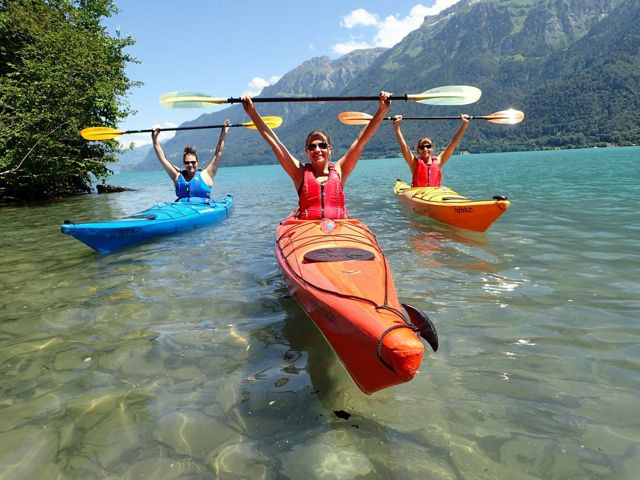
Galerie mit sechs gleich grossen Bildern und Namen in der Kerbe: Schiff, Kajak, Jetboat, Rothorn, Harder Kulm, Ballenberg. Der Text schiebt sich beim Überfahren herein. Führt zur Seite «Vor der Tür».
Hochschweben, 95 ms Staffel · 2 Scrolls
Der See im Abendlicht als stehendes Bild. Darunter die Angebote als Band zum Blättern: Romantische Auszeit, All-Inclusive Sommer, Valentinstag. Zuerst die Leistung, der Preis klein am Fuss.
Fenster + Band, nativer Seitwärts-Scroll · 3 Scrolls
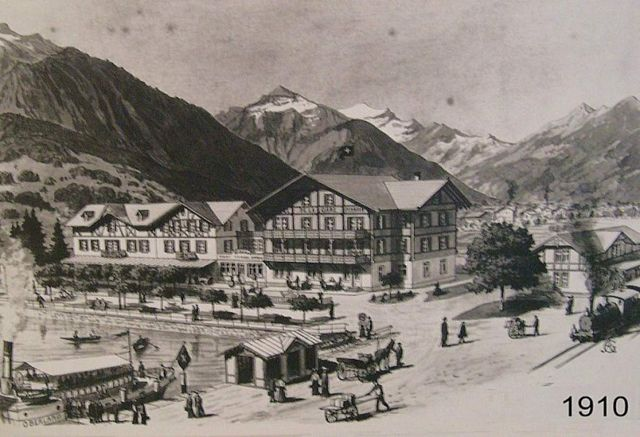
1873 · 40 Zimmer · 2 Restaurants · 120 Gäste im Saal mit Panoramaterrasse. Ziffern steigen aus einer Linie. Daneben das Haus von 1910 und der Satz «Kauf bricht Miete» als Einstieg in die Geschichte.
Zahlen zählen hoch · 2 Scrolls
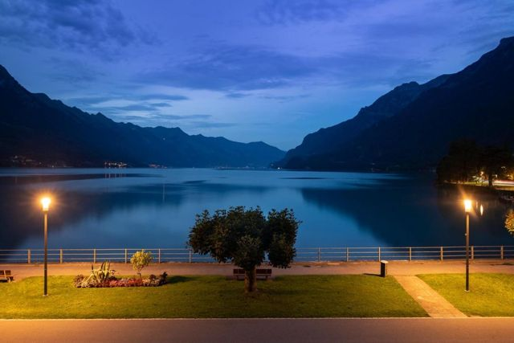
Der Satz gross, zwei Knöpfe (Zimmer buchen, Kontakt & Anreise), drei Angaben: Schiffstation vor dem Haus · Postauto 103 vor der Tür · Parkplätze gratis. Dann der Fuss mit beiden Öffnungszeiten.
Leises Foto hinter dem Satz · 1 Scroll
07Die Zimmer
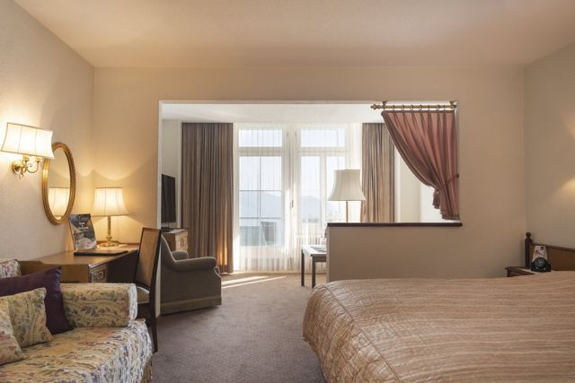
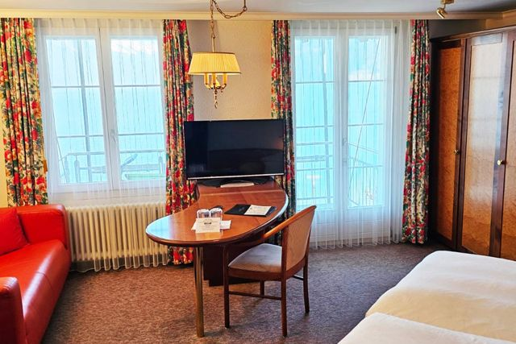
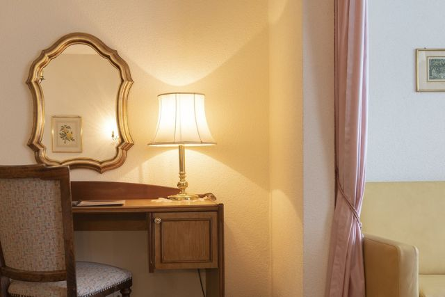
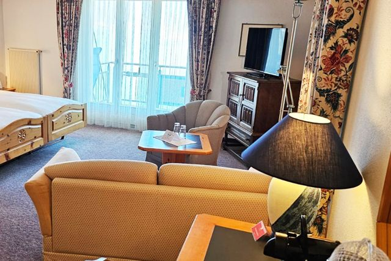
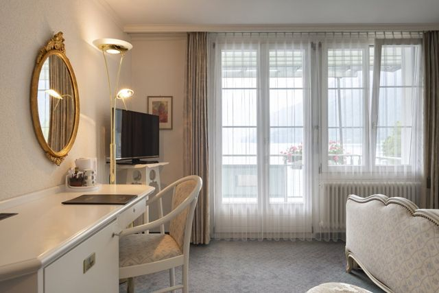
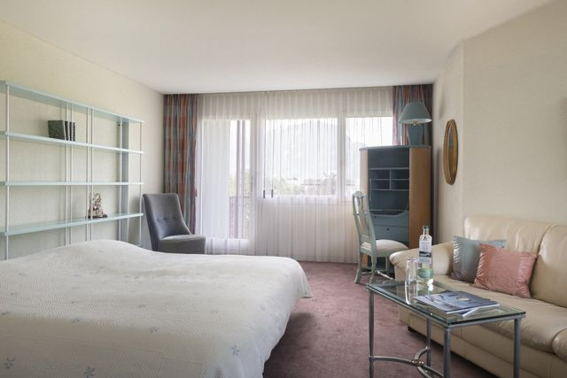
Die Zimmer-Seite beginnt mit den zwei Fragen (Sonne, Personen). Darunter ein Raster aus Karten, Unpassendes verblasst, ein Satz nennt den Stand («Es bleiben 3 von 8»). Jede Kategorie bekommt eine eigene Fläche im Wechsel, dazwischen die Wellenlinie mit dem Siegel: Gefüge aus drei Fotos, Grösse, Belegung, Bett, Bad und die Ausstattungsliste im Wortlaut. Jedes Foto öffnet die grosse Ansicht mit allen Bildern der Kategorie.
Die Fotos sind so zugeordnet, wie die Live-Seite sie zeigt (von dort abgelesen, siehe zimmer-zuordnung.md): Superior und Classic sind die hellen neuen Zimmer, Comfort und Familienzimmer die mit rotem Ledersofa, die Junior Suiten die Bel-Etage-Zimmer 102 und 103. Alle drei Stände stehen heute auf der Seite und bei Booking. Fotos ohne Zimmernummer bleiben «weitere Einblicke».
Zimmerpreise nennt das Haus nicht, sie bleiben im Buchungssystem. Was es nennt, steht auf einem Blatt Papier: Halbpension CHF 45, Extrabett CHF 20 / 50, Hund CHF 15, Garage CHF 20, City-Tax CHF 2,80.
08Essen und Trinken
Eine Seite, zwei Stimmungen. Oben «La Gare» auf heller Fläche: Saal mit See hinter den Fenstern, Terrasse mit wasserdichten Storen, Frühstück, der täglich wechselnde Hauptgang, Kinderkarte, Öffnungszeiten. Darunter «La Bohème» auf Holz-dunkler Fläche: Ofen, Teig, Bar, Take-away, Zeiten Sommer und Winter als Schalter mit gleitender Taste.
Bögen nur hier: die echten Tellerfotos des Hauses als Reihe «Aus der Küche», ohne erfundene Gerichtnamen, denn welcher Teller welches Gericht ist, steht nirgends. Die Karten selbst als gefalteter Bogen Papier mit drei Seiten (Wortlaut der Speisekarte 2026 und der Pizzeriakarte) plus PDF. Für Gerichte ohne Foto nur auf Dein Wort Platzhalter erzeugen (zuerst vier Proben).
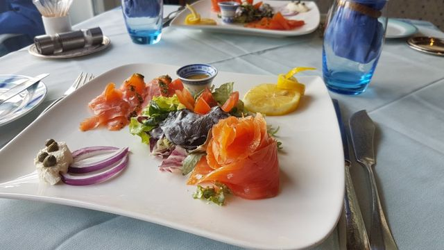
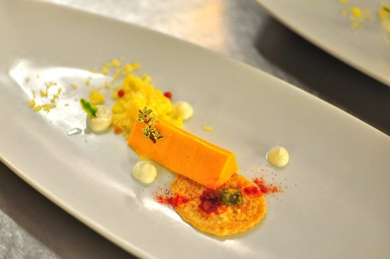
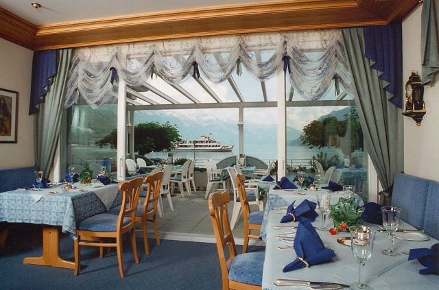
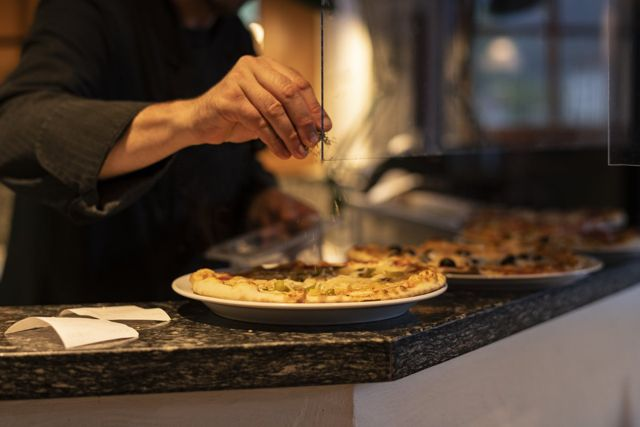
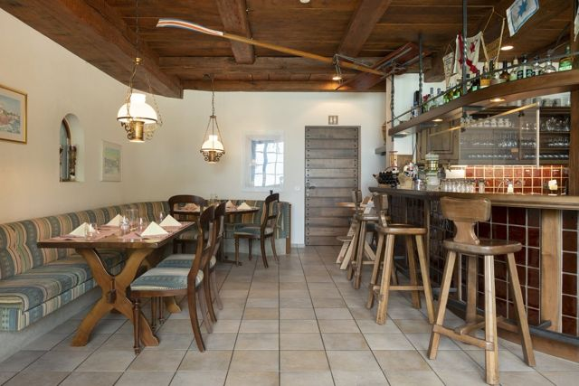
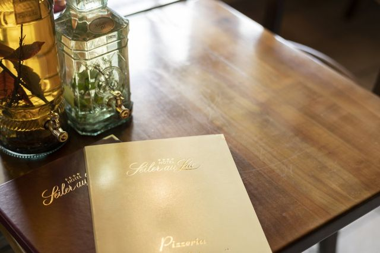
09Feiern und Tagen
Das Haus zählt je nach Nutzung anders: Bankett (Panoramaterrasse 10–20, Salon Rouge bis 40, Saal bis 100, mit Terrasse 120) und Tagung (Panorama 10–15, Salon Rouge 20–24, Niesen 35, Saal bis 150). Deshalb ein Schalter «Feiern / Tagen» über den Räumen, der die Zahlen tauscht, nie beides durcheinander. Jeder Raum als grosse Bühne mit Foto und Personenzahl.
Pauschalen als drei erhabene Karten: Seminarpauschale im Einzelzimmer CHF 235, im Doppelzimmer CHF 215, Tagespauschale CHF 75, je mit dem Inhalt des Hauses. Technik als Angaben auf einer Linie. Fest- und Apéro-Vorschläge als PDF (die liegen seit 2018 bis 2020 vor: vorher mit Dir klären). Anfrage als dunkle Karte mit eingelassenen Feldern, öffnet das Mailprogramm.
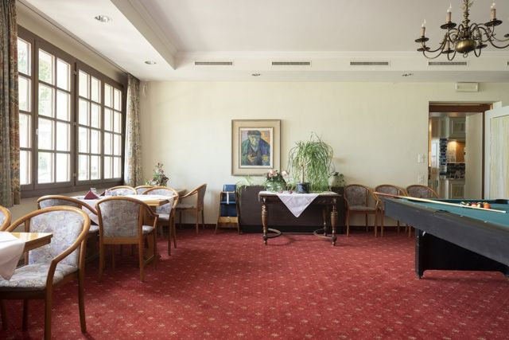
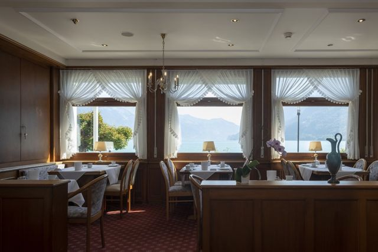
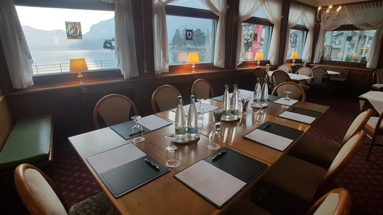
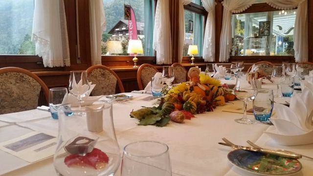
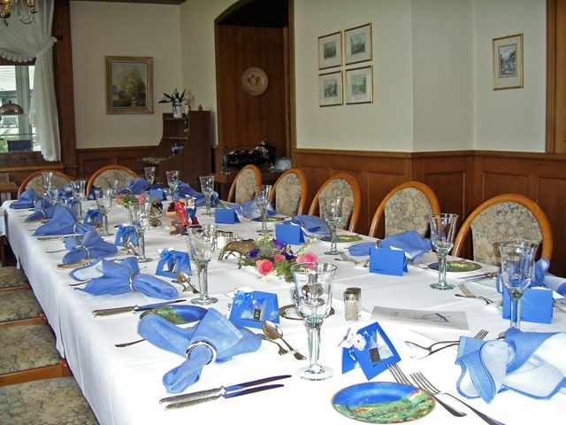
10Vor der Tür · Geschichte · Film
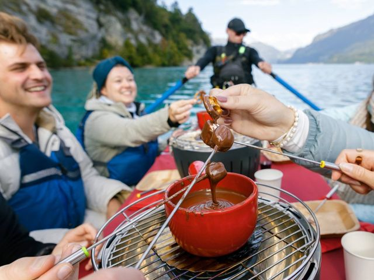
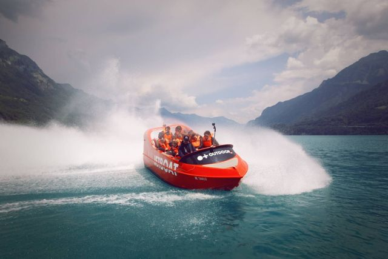
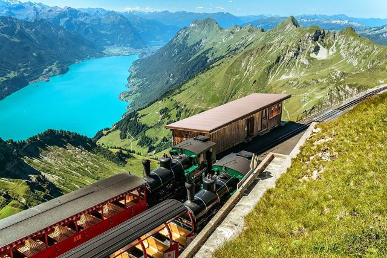
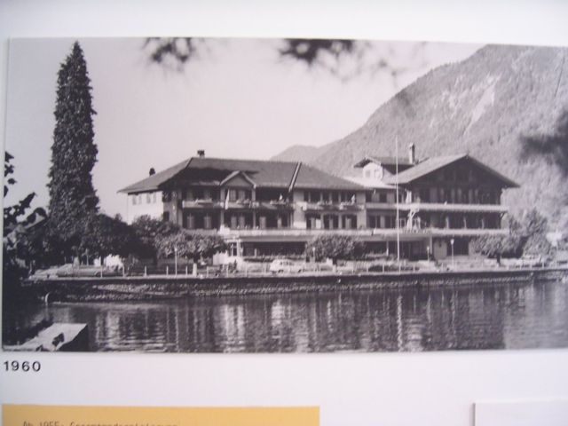
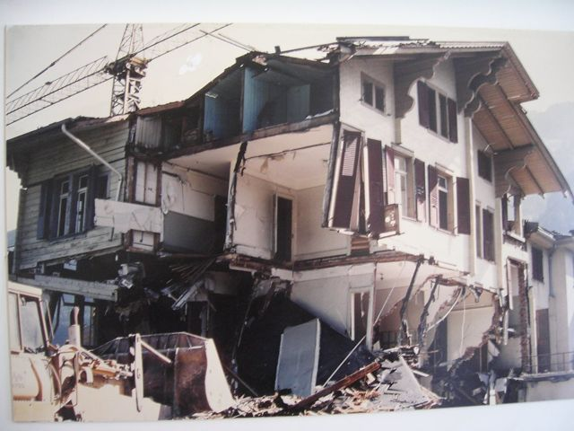
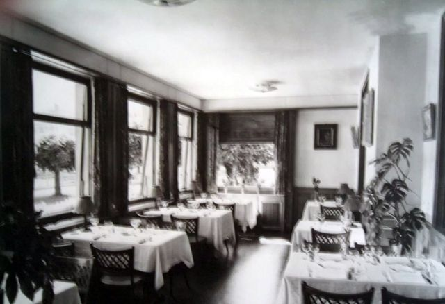
Die 16 Beiträge des Hauses, in halb so vielen Worten, als Band zum Blättern mit grossen Karten in vier Gruppen: auf dem See (Schiff, Kajak, Jetboat, Raclette Rafting, Schoggi-Float), in die Höhe (Rothorn, Schynige Platte, Harder Kulm), zu Fuss und per Velo (drei Wasserfälle, Lütschine, Brienzersee-Loop), für Familien (Ballenberg, Beatus-Höhlen, Trümmelbachfälle). Die Zeiten ab Bönigen stehen in der Kerbe.
Nach unten als Stapel: jede Karte bleibt oben stehen, die nächste schiebt sich darüber (sticky, kein Skript). Die Sätze des Hauses wörtlich: «Kauf bricht Miete», «Kostenüberschreitung nicht mehr als 1,48 %!». Dazu die Fotos von 1910, 1960 und vom Umbau 1983. Der Strahl endet 2007/08, so wie die Seite. Wer heute führt, kommt nur auf Dein Wort hinein.
Zwischen Geschichte und Fuss auf «Das Haus»: das Standbild aus dem Kanal-Film, Klick startet den Film gross. Kein laufendes Video hinter einer scrollenden Fläche.
11Wo welche Bewegung sitzt
Höchstens drei bis vier Scroll-Bewegungen, ein bewegtes Element im Blick, alles Scroll-Getriebene in einem Takt. Grosse Flächenbilder werden in voller Quellbreite gerechnet (bis 2560 px) und nachgeschärft, Abdunklung ins Bild gerechnet. Erster Bildschirm am Rechner unter 700 KB, am Handy unter 550 KB (Carlton: 675 / 520). Gemessen wird 4× und 6× gedrosselt, Safari und Chrome, 320 bis 768 px und Rechner, nur der fertige Bau. Im Konflikt fällt die Idee.
Vor der Messung: Der Mac steht gerade im Stromsparmodus (powermode 1). Der deckelt Chrome auf 30 Bilder pro Sekunde. Vorher ausschalten.
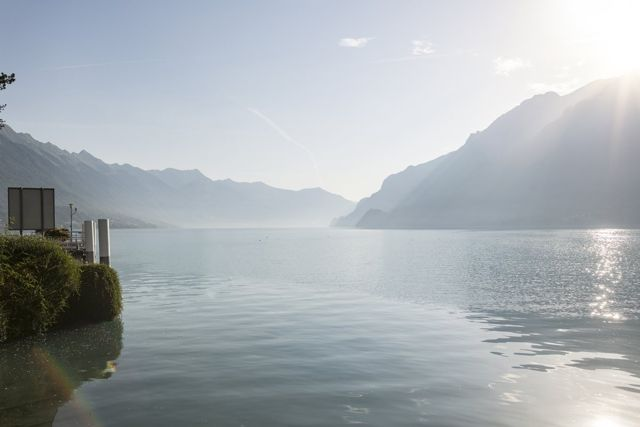
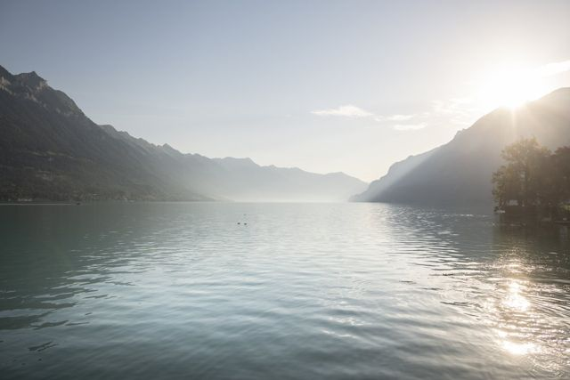
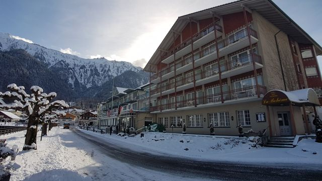
12Seitenliste und Fuss
| Seite | Was darauf steht |
|---|---|
| Start | Die zwölf Stationen von oben |
| Zimmer | Zwei Fragen, acht Kategorien, Blatt mit den Angaben des Hauses, weitere Einblicke |
| Angebote | Romantische Auszeit, All-Inclusive Sommer, Valentinstag, Gutschein |
| Essen & Trinken | La Gare, La Bohème, Karten als Blatt und PDF, Frühstück, Tisch reservieren (Telefon und Mail) |
| Feiern & Tagen | Vier Räume mit Schalter, Pauschalen, Vorschläge als PDF, Anfrage |
| Vor der Tür | 16 Beiträge in vier Gruppen, Bus und Schiff ab Haus, Links des Hauses |
| Das Haus | Geschichte als Zeitstrahl, Film, Garten und Salon, Massage (Franco Vitaliano), Gut zu wissen (Gäste-Info ohne WLAN), Stellen |
| Kontakt & Anreise | Lage, Schiff, Postauto 103, Auto aus Bern und Luzern, Parkplätze, Formular, Newsletter |
| Impressum · Datenschutz · AGB | Wortlaut des Hauses, Inhaltsfeld links, Blatt rechts |
Jede der 45 heutigen Seiten hat in dieser Liste einen Platz (Tabelle in recherche.md). Nur «Events» (ein externer PDF-Link) und das Instagram-Konto (nicht erreichbar) bleiben offen.
Der Fuss
Hier sind Sie zuhause.
| La Gare | Mi–So 8.00–14.00 und 18.00–21.00, warme Küche 12.00–14.00 und 18.00–20.30, Mo und Di Ruhetag |
|---|---|
| La Bohème | Sommer Do 17.00–22.00, Fr–Di 12.00–22.00 · Winter Do–So 17.30–22.00 |
| Anreise | Schiffstation vor dem Haus · Postauto 103 ab Interlaken Ost, Haltestelle vor dem Hotel · Parkplätze gratis |
| Kontakt | Am Quai 3, 3806 Bönigen · +41 33 828 90 90 · hotel@seileraulac.ch |
Designstudie von Tasty Studios, nicht die offizielle Website
13Bildauswahl
Aus 779 Bildern und drei Filmen. Zu jedem Bild sind Datei und Herkunft bekannt (_auswahl/auswahl.json). Schweiz Tourismus liefert die Originale bis 8256 px: der See zu jeder Tageszeit, das Haus vom Wasser, Pizzeria, Küche, Massage, Billard. Die Mediathek liefert die Zimmer mit Nummer, die Erlebnisse auf dem See, die Ausflüge und die Geschichte. Gästefotos und Gästevideos kommen nicht auf die Seite.
Bögen: See · Haus · Zimmer · La Gare · La Bohème · Feiern & Tagen · Im Haus · Vor der Tür · Geschichte · Winter
Kein aktuelles Foto vom Frühstücksbuffet (nur eine Aufnahme aus den 2000ern), vom Garten mit Liegewiese und Tischtennis, von der Pizzeria-Terrasse am See, von den Gastgebern oder dem heutigen Team (die Tafel-Aufnahme ist ohne Jahr). Winterbilder zeigen den Thunersee, nicht den Brienzersee, und bleiben draussen. Die Stock-Bilder der heutigen Seite (Paar auf dem Sofa, Wanderin auf dem Felsen, Konzert, Hundeschlitten, Valentins-Paar) kommen nicht auf die Seite.
14Offen, bevor ich baue
Danach: Designidentität mit einem fertigen Abschnitt als Probe, dann die Website Abschnitt für Abschnitt mit Messung.